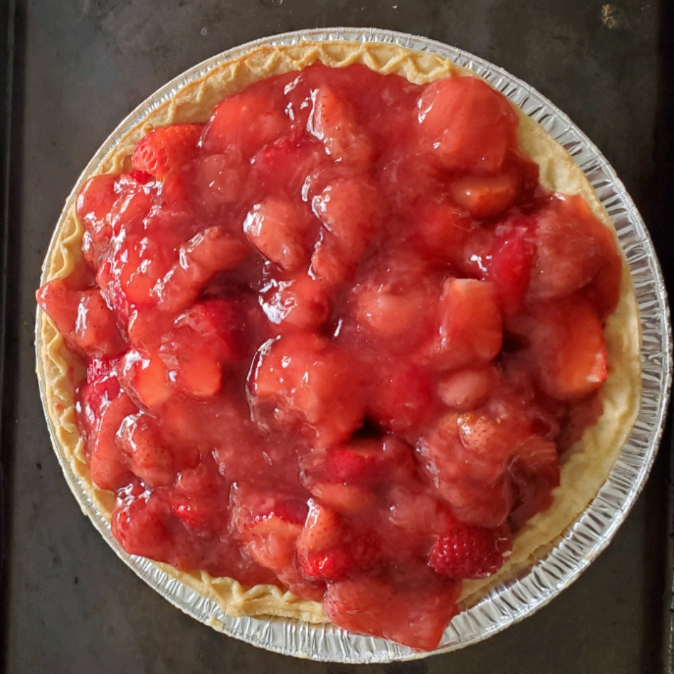

Strawberry Pie

This is the recipe to make a faboulous Strawberry Pie! I hope you'll like it !
Ingredients
- 1 (9 inch) pie crust, baked
- 1 quart fresh strawberries
- 1 cup white sugar
- 3 tablespoons cornstarch
- ¾ cup water
- ½ cup heavy whipping cream
Steps
- Arrange half of strawberries in baked pastry shell.
Mash remaining berries and combine with sugar in a
medium saucepan. Place saucepan over medium heat and bring
to a boil, stirring frequently.
- In a small bowl, whisk together cornstarch and water.
Gradually stir cornstarch mixture into boiling strawberry mixture. Reduce heat and
simmer mixture until thickened, about 10 minutes, stirring constantly.
Pour mixture over berries in pastry shell.
- Chill for several hours before serving. In a small bowl, whip cream until soft peaks
form. Serve each slice of pie with a dollop of whipped cream.